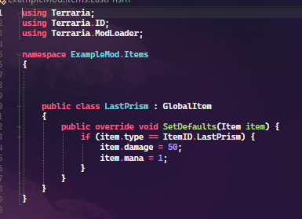
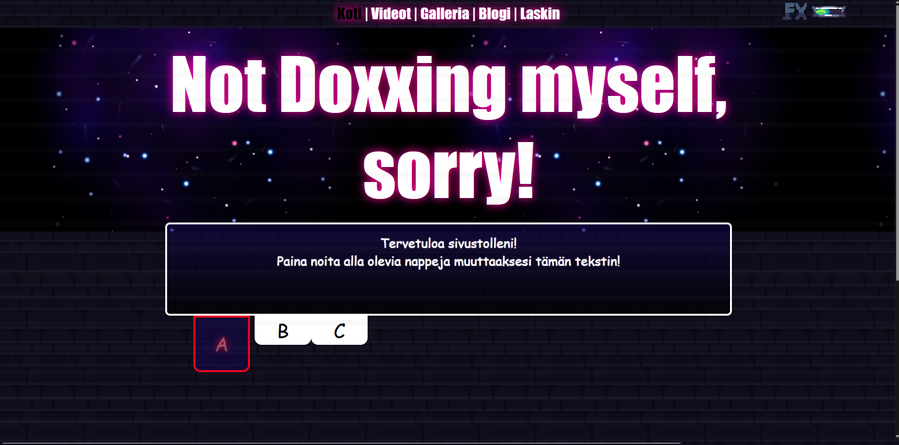
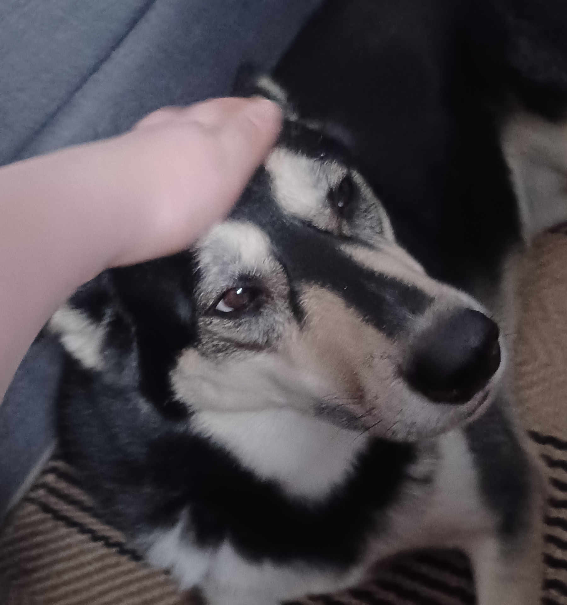
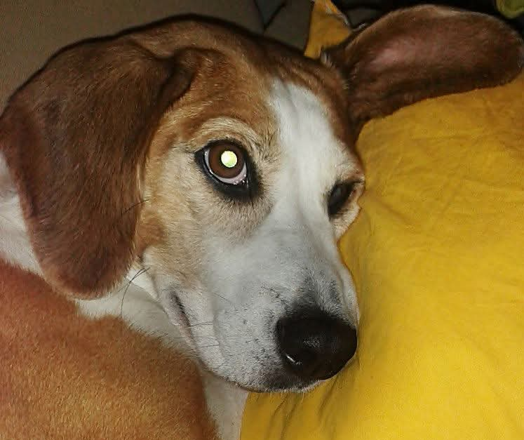
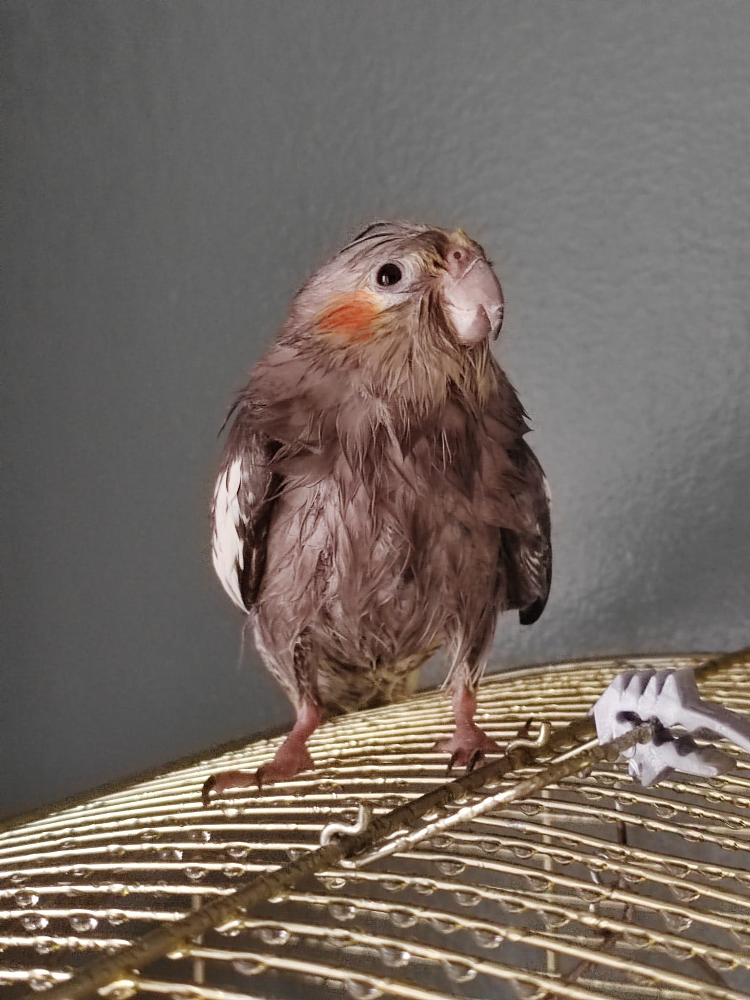
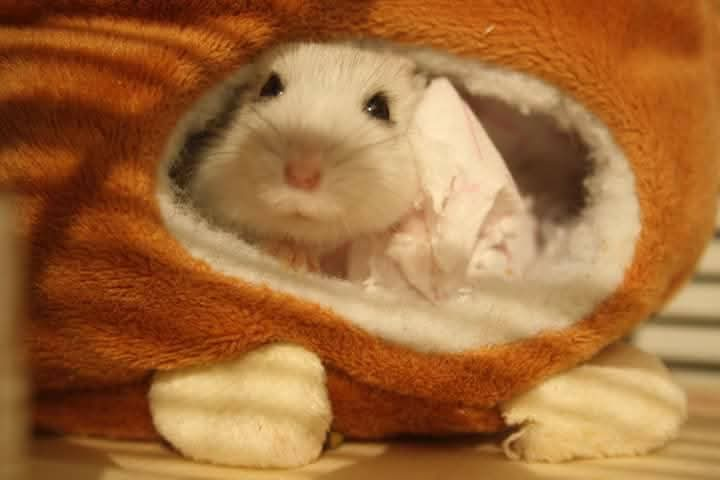
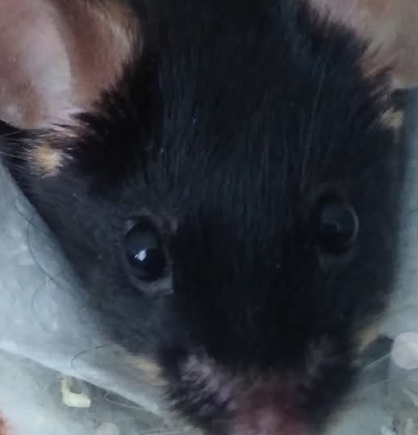
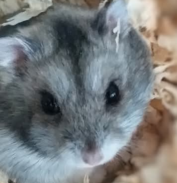

Crean


I'm CreanBL, a Finnish guy with a passion for videogames.
I have been a Minecraft and Terraria fan since kindergarten.
I got interested in Terraria Modding in the late 2010s, I don't really remember.
And it went horribly, I still dread the things I did to this day.

A few years later, I tried making a small mod that re-adds Tizona from the old console versions.
I didn't know what the hell I was doing, but something kept me going.
And then I developed a passion for programming and pixel-art.
The mod is still being developed to this day, and should be releasing in ~2026(?)
I taught myself to program in HTML a few years ago, and recently created a website in Computer Science.
After that, I started making this website.

My favourite games are:
> Terraria
> Celeste
> Touhou Project Series
> ULTRAKILL
I have an overwhelming amount of pets, 26 if we count dead and alive.
> Twenty Budgies
> One Cockatiel
> Two Dogs
> Two Hamsters
> One Mouse







I'm really introverted, so I don't have many friends.
And I'm sometimes too scared to start conversations, so I go for weeks without talking to them.
It just sucks so much being lonely.
I think these problems are caused by my ADHD and autism.
I think that's all that you need to know about me.
If you think I'm weird, keep that to yourself.
Nobody wants to hear your opinions.